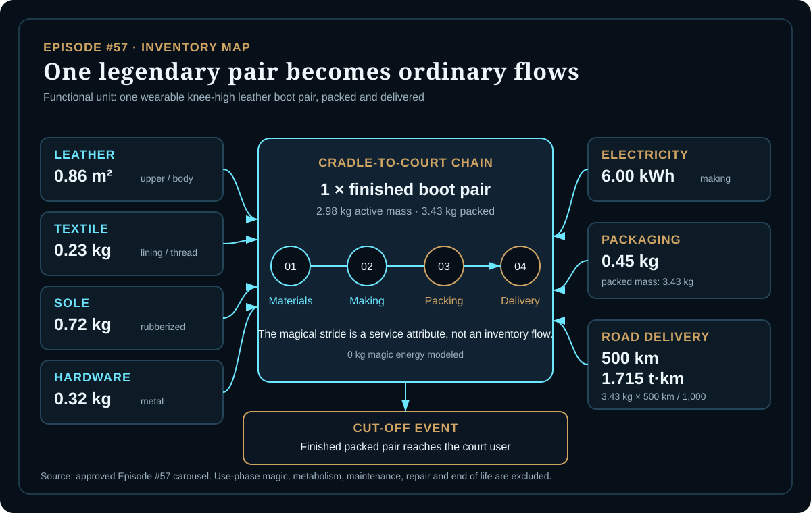
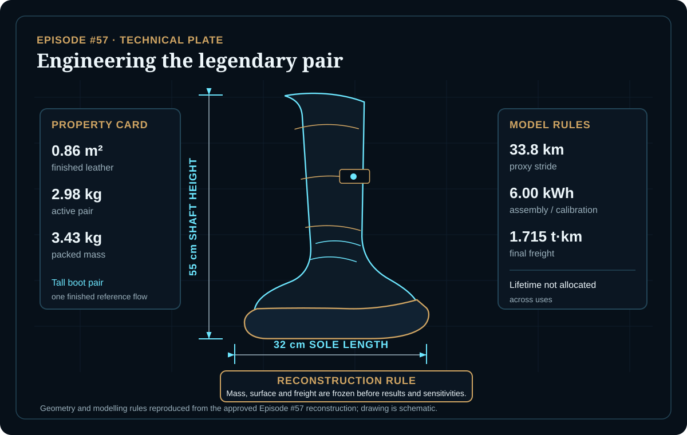
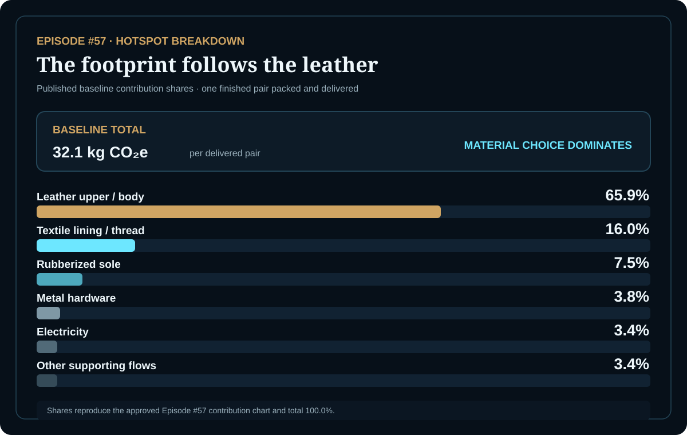

EPISODE #57 · MYTHS & LEGENDS
Seven-League Boots
What footprint stands behind a single stride that crosses thirty-three kilometres?
THE SUBJECT
The fastest object in the tale still begins as material.
The approved episode models one finished pair of Seven-League Boots as a delivered artifact, not the supernatural physics of the stride. The legendary service claim is represented by a 33.8 km proxy stride, while the reference flow remains one knee-high leather boot pair.
The reconstruction freezes geometry, mass and freight before results and sensitivities: 0.86 m² of finished leather, 2.98 kg active mass, 0.45 kg packaging and 500 km of final road delivery. Human metabolism and magical displacement are excluded rather than assigned invented energy flows.
Proxy stride
Seven leagues are reconstructed as 33.8 km per stride; the functional unit remains the pair.
Reference flow
One 2.98 kg active pair becomes 3.43 kg when packed for final delivery.
Main hotspot
Finished leather contributes 65.9% of the modeled baseline footprint.
Modelling convention
Magic energy is 0 kg in the inventory because supernatural displacement is outside the boundary.
VISUAL MODEL
From hide to horizon
The physical inventory and reconstruction parameters are separated so the impossible service claim never becomes a hidden activity flow.


LIFE CYCLE INVENTORY
The boots become flows
Quantities, factors and line results reproduce the approved Episode #57 carousel. The six displayed rounded line results sum to 31.78 kg CO₂e, while the approved headline total is 32.1 kg CO₂e; both are preserved and no balancing flow is invented.
| Stage | Component / activity | Activity data | Climate change | Modelling basis |
|---|---|---|---|---|
| Material production | Leather upper / body | 0.86 m² | 21.16 kg CO₂e | 24.6 kg CO₂e/m² finished-leather literature proxy; leather is not represented by a suitable DEFRA material factor. |
| Material production | Textile lining / thread | 0.23 kg | 5.13 kg CO₂e | 22.31 kg CO₂e/kg; DEFRA 2026 supporting-material proxy as disclosed in the approved episode. |
| Material production | Rubberized sole | 0.72 kg | 2.40 kg CO₂e | 3.336 kg CO₂e/kg; DEFRA 2026 supporting-material proxy. |
| Material production | Metal hardware | 0.32 kg | 1.22 kg CO₂e | 3.822 kg CO₂e/kg; DEFRA 2026 supporting-material proxy. |
| Making & calibration | Electricity | 6.00 kWh | 1.11 kg CO₂e | 0.184 kg CO₂e/kWh; approved total factor includes generation, transmission and distribution, WTT generation and WTT T&D. |
| Packaging & delivery | Packaging plus final road freight | 0.45 kg packaging + 1.715 t·km | 0.76 kg CO₂e | Combined DEFRA 2026 packaging and road-freight proxies as published; 3.43 kg packed mass × 500 km / 1,000. |
Included
Material production, boot making and calibration, packaging, final road freight and source/proxy documentation.
Excluded
Human walking metabolism, supernatural displacement, maintenance and repair, and end-of-life treatment.
Cut-off event
The model stops when one finished, packed pair reaches the court user. Use-phase magic remains outside the boundary.
Factor convention
DEFRA 2026 is used for supporting material, energy and freight flows. Finished leather uses the separately disclosed European literature proxy and sensitivity range.
HOTSPOT
The footprint follows the leather
The stride is spectacular, but the hotspot is material choice.

Main result
32.1 kg CO₂e
Per finished pair packed and delivered.
Finished leather
65.9%
Surface-intensive construction controls the baseline.
Textile
16.0%
Lining and thread are the second-largest published contribution.
Final freight
Under 1%
The approved interpretation identifies delivery as minor.
Material-mass sensitivity
0.80× → 26.0 kg CO₂e
1.00× → 32.1 kg CO₂e
1.35× → 42.7 kg CO₂e
Only physical material mass changes; factor values and the functional unit remain fixed.
Finished-leather factor sensitivity
7.75 kg CO₂e/m² → 17.6 kg CO₂e
24.6 kg CO₂e/m² → 32.1 kg CO₂e
53.7 kg CO₂e/m² → 57.1 kg CO₂e
Geometry, mass, supporting materials, electricity and freight remain identical to baseline.
Mass matters
A reinforced 1.35× pair reaches 42.7 kg CO₂e. Adding reinforcement increases the result by about one third without changing the service claim.
Interpretation
The main uncertainty is not legendary distance but the finished-leather attribution model. The ordinary artifact, not its impossible use phase, determines the environmental story.
THE VERDICT
Leather dominates.
Mass matters.
Freight is minor.
Magic is out of scope.
The environmental story is not speed. It is what had to be made first.